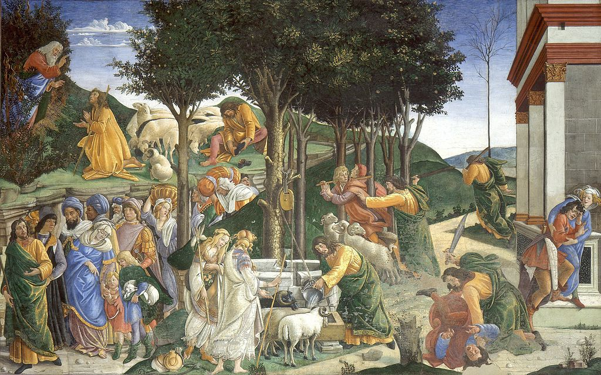

<head>
<meta charset="UTF-8" />
<meta name="keywords" content="drawing, painting" />
<meta name="description" content="drawings by Sunjy" />
<title>Sunjy</title>
<link rel="shortcut icon" type="image/x-icon" href="../../mImages/mCommon/favicon.ico" media="screen" />
<link rel="stylesheet" type="text/css" href="../../mCsses/mCommon/mCssA.css" />
<link rel="stylesheet" type="text/css" href="../../mCsses/mCommon/mCssB.css" />
<link rel="stylesheet" type="text/css" href="../../mCsses/mCommon/mCssC.css" />
<link rel="stylesheet" type="text/css" href="../../mCsses/mCommon/mCssD.css" />
<link rel="stylesheet" type="text/css" href="../../mCsses/mContent/mCssA.css" />
<link rel="stylesheet" type="text/css" href="../../mCsses/mContent/mCssB.css" />
<link rel="stylesheet" type="text/css" href="../../mCsses/mContent/mCssC.css" />
<link rel="stylesheet" type="text/css" href="../../mCsses/mContent/mCssD.css" />
</head>
<script type="text/javascript" src="../../mScripts/mContent/mContentAA.js" /></script>
<script type="text/javascript" src="../../mScripts/mContent/mContentAB.js" /></script>
<script type="text/javascript" src="../../mScripts/mContent/mContentAC.js" /></script>
<script type="text/javascript" src="../../mScripts/mContent/mContentAD.js" /></script>
<script type="text/javascript"></script> 
<script type="text/javascript">
document.write('<div class="mImgAbsolute"></div>');
/*
document.write('<p class="mFontSizeBColor" />From a white paper...</p>');
document.write('<table class="center"><tr><td>');
document.write('');
document.write('</td></tr></table>');
*/
</script>


<script type="text/javascript">
document.write('<p class="mFontSizeBColor" />The Trials of Moses</p>');
document.write('<p class="mFontSizeSColor" />“The Trials of Moses” by Sandro Botticelli is a fresco, executed in 1481–1482 at the Sistine Chapel, Rome. The fresco shows four episodes from Moses’ life, taken from Exodus. Firstly, Moses is depicted on the right, killing the Egyptian who was mistreating a Hebrew, and he is then shown fleeing to the desert. Moses is distinguishable in the scenes by his yellow dress and the green cloak.<br><br>In the next episode, Moses fights the shepherds who were preventing Jethro’s daughters, including his future wife, Zipporah, from watering their herd at the well. In this episode, he is also shown taking water from the well to help water the flock.<br><br>In the third scene, in the upper left corner, Moses removes his shoes, and he then receives from God the mission to return to Egypt to free his people, the Hebrews. In the final episode in the lower-left corner, Moses is shown leading the Jews to the Promised Land. In total, Moses appears seven times in this fresco.<br></p>');
document.write('<table class="center" /><tr><td>');
document.write('<br>In the next episode, Moses fights the shepherds who were preventing Jethro’s daughters, including his future wife, Zipporah, from watering their herd at the well. In this episode, he is also shown taking water from the well to help water the flock.<br><br>In the third scene, in the upper left corner, Moses removes his shoes, and he then receives from God the mission to return to Egypt to free his people, the Hebrews. In the final episode in the lower-left corner, Moses is shown leading the Jews to the Promised Land. In total, Moses appears seven times in this fresco.<br>" />');
document.write('</td></tr></table>');
</script>


